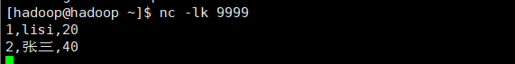

1、编程概述 Flink中的DataStream程序是常规程序，可对数据流实施转换（例如，iltering, updating state, defining windows, aggregating）。最初从各种来源（例如，消息队列，套接字流，文件）创建数据流。结果通过接收器返回，接收器可以例如将数据写入文件或标准输出（例如命令行终端）。Flink程序可以在各种上下文中运行，独立运行或嵌入其他程序中。执行可以在本地JVM或群集中进行。
下面的程序是流窗口单词计数应用程序示例，它在5秒内计算来自web套接字的单词。您可以复制并粘贴代码以在本地运行它。
1 2 3 4 5 6 7 8 9 10 11 12 13 14 15 16 17 18 19 20 import org.apache.flink.streaming.api.scala._import org.apache.flink.streaming.api.windowing.time.Timeobject WindowWordCount { def main (args: Array[String]) { val env = StreamExecutionEnvironment.getExecutionEnvironment val text = env.socketTextStream("localhost" , 9999 ) val counts = text.flatMap { _.toLowerCase.split("\\W+" ) filter { _.nonEmpty } } .map { (_, 1 ) } .keyBy(0 ) .timeWindow(Time.seconds(5 )) .sum(1 ) counts.print() env.execute("Window Stream WordCount" ) } }
要运行示例程序，首先从终端用netcat启动输入流:
2、数据源 源是程序读取其输入的位置。您可以使用将源附加到程序StreamExecutionEnvironment.addSource(sourceFunction)。Flink附带了许多预先实现的源函数（见下面几种），但是您始终可以通过实现SourceFunction 实现非并行 源，实现ParallelSourceFunction接口或者扩展 RichParallelSourceFunctionfor实现并行 源来编写自己的自定义源。
基于File的数据源
readTextFile(path)- TextInputFormat逐行读取文本文件，即符合规范的文件，并将其作为字符串返回。
readFile(fileInputFormat, path) -根据指定的文件输入格式读取（一次）文件。
readFile(fileInputFormat, path, watchType, interval, pathFilter)-这是前两个内部调用的方法。它path根据给定的读取文件fileInputFormat。根据提供的内容watchType，此源可以定期（每intervalms）监视路径中的新数据（FileProcessingMode.PROCESS_CONTINUOUSLY），或处理一次路径中当前的数据并退出（FileProcessingMode.PROCESS_ONCE）。使用pathFilter，用户可以进一步从文件中排除文件。
基于Socket的数据源
socketTextStream-从套接字读取。元素可以由定界符分隔。
基于Collection的数据源 fromCollection(Seq)-从Java Java.util.Collection创建数据流。集合中的所有元素必须具有相同的类型。
fromCollection(Iterator)-从迭代器创建数据流。该类指定迭代器返回的元素的数据类型。
fromElements(elements: _*)-从给定的对象序列创建数据流。所有对象必须具有相同的类型。
fromParallelCollection(SplittableIterator)-从迭代器并行创建数据流。该类指定迭代器返回的元素的数据类型。
generateSequence(from, to) -并行生成给定间隔中的数字序列。
自定义数据源 addSource-附加新的源功能。例如，要阅读Apache Kafka，可以使用 addSource(new FlinkKafkaConsumer08<>(…))。
自定义数据源案例
SourceFunction 不可并行
1 2 3 4 5 6 7 8 9 10 11 12 13 14 15 16 17 18 19 20 package com.kun.flink.chapter05import org.apache.flink.streaming.api.functions.source.SourceFunctionclass CustomNoParallelSouceFunction extends SourceFunction[Long]{ var count=1L var isRunning=true override def run (ctx: SourceFunction.SourceContext[Long]) : Unit = { while (isRunning){ ctx.collect(count) count+=1 Thread.sleep(1000 ) } } override def cancel () : Unit = { isRunning=false } }
ParallelSourceFunction 可并行
1 2 3 4 5 6 7 8 9 10 11 12 13 14 15 16 17 18 19 package com.kun.flink.chapter05import org.apache.flink.streaming.api.functions.source.{ParallelSourceFunction, SourceFunction}class CustomParallelSouceFunction extends ParallelSourceFunction[Long]{ var isRunning = true var count=1L override def run (ctx: SourceFunction.SourceContext[Long]) : Unit = { while (isRunning){ ctx.collect(count) count+=1 Thread.sleep(1000 ) } } override def cancel () : Unit = { isRunning=false } }
RichParallelSourceFunction可并行
1 2 3 4 5 6 7 8 9 10 11 12 13 14 15 16 17 18 19 20 package com.kun.flink.chapter05import org.apache.flink.streaming.api.functions.source.{RichParallelSourceFunction, SourceFunction}class CustomRichParallelSouceFunction extends RichParallelSourceFunction[Long] { var isRunning = true var count = 1L override def run (ctx: SourceFunction.SourceContext[Long]) : Unit = { while (isRunning) { ctx.collect(count) count += 1 Thread.sleep(1000 ) } } override def cancel () : Unit = { isRunning = false } }
1 2 3 4 5 6 7 8 9 10 11 12 13 14 15 16 17 18 19 20 21 22 23 24 25 26 27 28 29 30 31 32 package com.kun.flink.chapter05import org.apache.flink.streaming.api.scala._object DataStreamSourceApp { def main (args: Array[String]) : Unit = { val env = StreamExecutionEnvironment.getExecutionEnvironment RichParallelSouceFunction(env) env.execute("DataStreamSourceApp" ) } def noParallelSouceFunction (env: StreamExecutionEnvironment) : Unit = { val data = env.addSource(new CustomNoParallelSouceFunction) data.print() } def ParallelSouceFunction (env: StreamExecutionEnvironment) : Unit = { val data = env.addSource(new CustomParallelSouceFunction) .setParallelism(2 ) data.print() } def RichParallelSouceFunction (env: StreamExecutionEnvironment) : Unit = { val data = env.addSource(new CustomRichParallelSouceFunction) .setParallelism(2 ) data.print() } }
主要看下split和select；其他待整理
1 2 3 4 5 6 7 8 9 10 11 12 13 14 15 16 17 18 19 def splitSelectFunction (env: StreamExecutionEnvironment) : Unit ={ val data = env.addSource(new CustomNoParallelSouceFunction) val splits = data.split(new OutputSelector[Long] { override def select (value: Long) : lang.Iterable[String] = { val list = new util.ArrayList[String]() if (value%2 ==0 ){ list.add("even" ) }else { list.add("odd" ) } list } }) val even = splits select "even" val odd = splits select "odd" val all = splits.select("even" ,"odd" ) }
4、数据 sinks 数据接收器使用DataStream，并将其转发到文件，套接字，外部系统或打印它们。Flink带有各种内置的输出格式：
writeAsText()/ TextOutputFormat-将元素按行写为字符串。通过调用每个元素的toString（）方法获得字符串。
writeAsCsv(…)/ CsvOutputFormat-将元组写为逗号分隔的值文件。行和字段定界符是可配置的。每个字段的值来自对象的toString（）方法。
print()/ printToErr() - 在标准输出/标准错误流上打印每个元素的toString（）值。可选地，可以提供前缀（msg），该前缀在输出之前。这可以帮助区分不同的打印调用。如果并行度大于1，则输出之前还将带有产生输出的任务的标识符。
writeUsingOutputFormat()/ FileOutputFormat-自定义文件输出的方法和基类。支持自定义对象到字节的转换。
writeToSocket -根据以下内容将元素写入套接字 SerializationSchema
addSink-调用自定义接收器功能。Flink捆绑有连接到其他系统（例如Apache Kafka）的连接器，这些连接器实现为接收器功能。
请注意，上的write*()方法DataStream主要用于调试目的。它们不参与Flink的检查点，这意味着这些功能通常具有至少一次的语义。刷新到目标系统的数据取决于OutputFormat的实现。这意味着并非所有发送到OutputFormat的元素都立即显示在目标系统中。同样，在失败的情况下，这些记录可能会丢失。
为了将流可靠，准确地一次传输到文件系统中，请使用flink-connector-filesystem。同样，通过该.addSink(…)方法的自定义实现可以参与Flink一次精确语义的检查点。
自定义sink
准备MySQL表
1 2 3 4 5 6 CREATE TABLE `student` ( `id` int (11 ) NOT NULL AUTO_INCREMENT, `name` varchar (255 ) DEFAULT NULL , `age` int (11 ) DEFAULT NULL , PRIMARY KEY (`id` ) ) ENGINE =InnoDB DEFAULT CHARSET =latin1;
项目pom文件添加
1 2 3 4 5 <dependency > <groupId > mysql</groupId > <artifactId > mysql-connector-java</artifactId > <version > 5.1.30</version > </dependency >
定义pojo
1 2 3 4 5 6 7 8 9 10 11 12 13 14 15 16 17 18 19 20 21 22 23 24 25 26 27 28 29 30 31 32 33 34 35 36 37 38 39 40 package com.kun.flink.chapter05;public class Student private int id; private String name; private int age; @Override public String toString () return "Student{" + "id=" + id + ", name='" + name + '\'' + ", age=" + age + '}' ; } public int getId () return id; } public void setId (int id) this .id = id; } public String getName () return name; } public void setName (String name) this .name = name; } public int getAge () return age; } public void setAge (int age) this .age = age; } }
自定义到MySQL的sink
1 2 3 4 5 6 7 8 9 10 11 12 13 14 15 16 17 18 19 20 21 22 23 24 25 26 27 28 29 30 31 32 33 34 35 36 37 38 39 40 41 42 43 44 45 46 47 48 49 50 51 52 53 54 55 56 57 58 59 60 61 62 63 64 65 66 67 68 package com.kun.flink.chapter05;import java.sql.Connection;import java.sql.DriverManager;import java.sql.PreparedStatement;import org.apache.flink.configuration.Configuration;import org.apache.flink.streaming.api.functions.sink.RichSinkFunction;public class SinkToMySQL extends RichSinkFunction <Student > PreparedStatement ps; private Connection connection; @Override public void open (Configuration parameters) throws Exception super .open(parameters); connection = getConnection(); String sql = "insert into student(id,name, age) values(?, ?, ?)" ; ps = this .connection.prepareStatement(sql); } @Override public void close () throws Exception super .close(); if (connection != null ) { connection.close(); } if (ps != null ) { ps.close(); } } @Override public void invoke (Student student, Context context) throws Exception ps.setInt(1 , student.getId()); ps.setString(2 , student.getName()); ps.setInt(3 , student.getAge()); ps.executeUpdate(); } private static Connection getConnection () Connection con = null ; try { Class.forName("com.mysql.jdbc.Driver" ); con = DriverManager.getConnection("jdbc:mysql://localhost:3306/test" ,"root" ,"root" ); } catch (Exception e) { System.out.println("-----------mysql get connection has exception , msg = " + e.getMessage()); } return con; } }
测试写入数据
1 2 3 4 5 6 7 8 9 10 11 12 13 14 15 16 17 18 19 20 21 22 23 24 25 26 27 28 29 30 package com.kun.flink.chapter05;import org.apache.flink.api.common.functions.MapFunction;import org.apache.flink.streaming.api.datastream.DataStreamSource;import org.apache.flink.streaming.api.datastream.SingleOutputStreamOperator;import org.apache.flink.streaming.api.environment.StreamExecutionEnvironment;public class JavaCustomSinkToMySQL public static void main (String[] args) throws Exception StreamExecutionEnvironment env = StreamExecutionEnvironment.getExecutionEnvironment(); DataStreamSource<String> source = env.socketTextStream("hadoop" , 9999 ); SingleOutputStreamOperator<Student> studentStream = source.map(new MapFunction<String, Student>() { @Override public Student map (String value) throws Exception String[] splits = value.split("," ); Student student = new Student(); student.setId(Integer.parseInt(splits[0 ])); student.setName(splits[1 ]); student.setAge(Integer.parseInt(splits[2 ])); return student; } }); studentStream.addSink(new SinkToMySQL() ); env.execute("JavaCustomSinkToMySQL" ); } }
